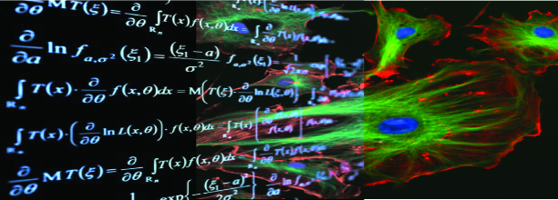
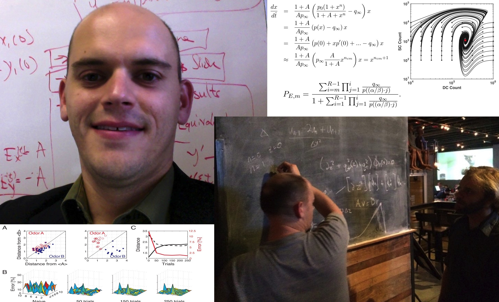

|  | Seth Haney, Ph. D. | ||
Department of Medicine | |||
| University of California, San Diego | |||
| 9500 Gilman Drive | |||
| La Jolla, CA | |||
email: sethdhaney [AT] gmail [DOT] com | |||
|  | I am a postdoctoral researcher in Dr. Maxim Bazhenov's lab where I work on modeling insect olfaction and the progression of chronic cancers. I also work on stochastic models of ecological competition.I recieved my Ph.D. in June of 2010. My doctoral adisor was Qing Nie and the title of my dissertation was: A Mathematical Approach to Signaling, Specificity, and Growth in Yeast Cell Mating. Please also see my github page where I work on machine learning projects including
|